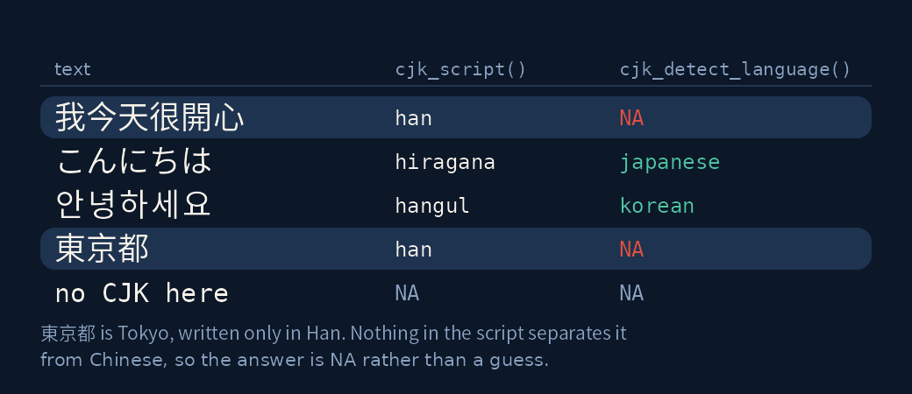
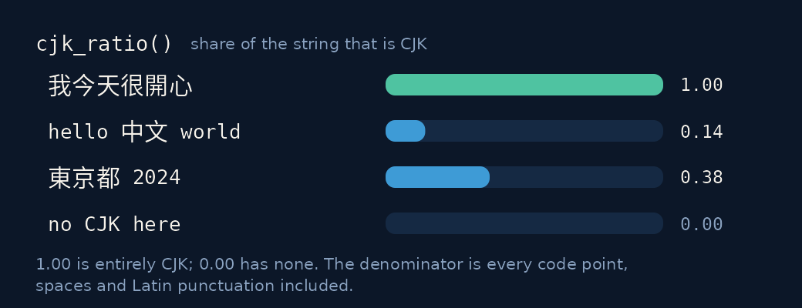
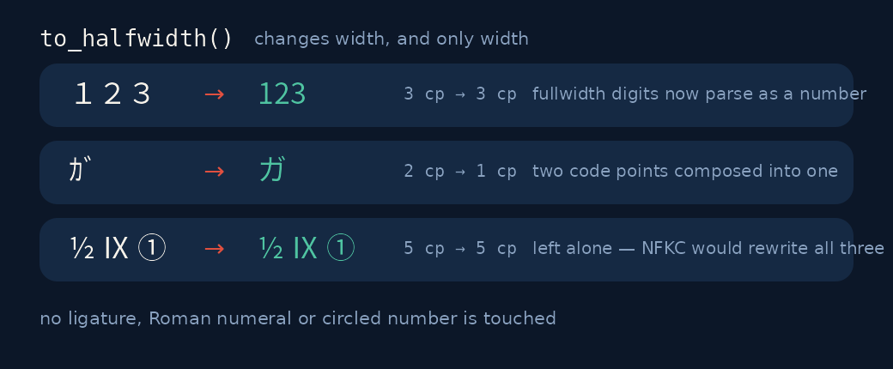

Tidy tools for Chinese, Japanese and Korean text. R’s text tooling assumes words are separated by whitespace; CJK writing does not oblige.

Installation
install.packages("tidycjk")What you get
| Detect |
has_cjk() · cjk_script() · cjk_detect_language() · cjk_ratio()
|
| Measure |
cjk_width() · cjk_char_counts() · cjk_summary()
|
| Lay out |
cjk_pad() · cjk_truncate() · cjk_wrap()
|
| Normalise |
to_halfwidth() · to_fullwidth()
|
| Segment |
cjk_tokens() · cjk_segment() · cjk_segmenters() · register_cjk_segmenter()
|
| NLP prep |
cjk_sentences() · cjk_ngrams()
|
| Order |
cjk_sort() · cjk_order()
|
| Transliterate |
cjk_romanize() · cjk_simplify() · cjk_traditionalize()
|
| Kana & jamo |
to_hiragana() · to_katakana() · cjk_jamo() · cjk_compose_jamo()
|
Every verb is vectorised and propagates NA. Three of them — cjk_summary(), cjk_char_counts() and cjk_tokens() — also take (data, column) and return a tibble straight into a dplyr pipeline.
Which script, which language?

library(tidycjk)
cjk_detect_language(c("こんにちは", "안녕하세요", "東京都"))
#> [1] "japanese" "korean" NA東京都 is Tokyo — Japanese — but it is written entirely in Han characters, and nothing in the script separates it from Chinese. Anything that answers "chinese" there is guessing. Ask for the guess explicitly if you want it:
cjk_detect_language("東京都", han_only = "chinese")
#> [1] "chinese"How much of this is CJK?

posts <- data.frame(
id = 1:3,
text = c("我今天很開心", "hello 中文 world", "no CJK here")
)
cjk_summary(posts, text)
#> # A tibble: 1 × 4
#> n_docs n_with_cjk prop_with_cjk mean_ratio
#> <int> <int> <dbl> <dbl>
#> 1 3 2 0.667 0.381prop_with_cjk answers “how many of these rows are CJK at all”; mean_ratio answers “how CJK are they”.
Fullwidth and halfwidth

The usual advice is NFKC, which fixes width and also rewrites ligatures, Roman numerals and circled numbers. to_halfwidth() changes width and nothing else.
as.numeric(to_halfwidth("１２３"))
#> [1] 123
nchar("ｶﾞ") # U+FF76 U+FF9E, two code points
#> [1] 2
to_halfwidth("ｶﾞ") == "ガ" # composed into one
#> [1] TRUESegmentation
Where a word ends is a fact about a language, not about Unicode. "icu" is a real word segmenter — ICU’s dictionary-based break iterators, which ship inside stringi, so it costs no dependency you do not already have:
cjk_segment("我今天很開心", engine = "icu")
#> [[1]]
#> [1] "我" "今天" "很" "開心"Words, not characters. "character" is the dictionary-free baseline, and the contrast is what a segmenter is for:
cjk_segment("我今天很開心", engine = "character")
#> [[1]]
#> [1] "我" "今" "天" "很" "開" "心"engine has no default, because "character" answers a different question and would otherwise be the answer you got by accident. (locale is accepted but does not pick the dictionary — ICU segments Han and kana by script, not by locale.) Register gibasa or jiebaR the same way — see vignette("segmentation").
Romanise and convert
cjk_romanize("中文") # pinyin
#> [1] "zhōng wén"
cjk_simplify("漢字") # traditional -> simplified
#> [1] "汉字"
to_hiragana("カタカナ")
#> [1] "かたかな"
cjk_jamo("한") # Hangul syllable -> jamo
#> [[1]]
#> [1] "ᄒ" "ᅡ" "ᆫ"Romanisation and Han conversion are per-character, which is exact for kana and jamo and an approximation for the other two — vignette("transliteration") is explicit about where each one breaks.
Sentences and n-grams
cjk_sentences("我今天很開心。你呢？")
#> [[1]]
#> [1] "我今天很開心。" "你呢？"
cjk_ngrams("中文很好") # character bigrams: the dictionary-free baseline
#> [[1]]
#> [1] "中文" "文很" "很好"Sorting is its own trap. sort() on Chinese gives code point order — which is radical order, not phonetic order, and so not what sorting a column of names calls for:
x <- c("張", "王", "李") # Zhang, Wang, Li
sort(x) # code point order
#> [1] "張" "李" "王"
cjk_sort(x, locale = "zh") # pinyin: Li, Wang, Zhang
#> [1] "李" "王" "張"cjk_blocks() exports the block table the whole package is built on, so the definition of “CJK” can be read rather than guessed at.
Learn more
vignette("tidycjk") · vignette("segmentation") · vignette("width-and-layout") · vignette("transliteration")
Related work
| Need | Use |
|---|---|
| Display width, width-aware padding |
stringi — stri_width() and stri_pad(), which cjk_width() and cjk_pad() wrap |
| Chinese segmentation |
jiebaR — register it as a tidycjk engine |
| Pinyin | pinyin, hanyupinyin |
| Traditional/simplified | tmcn; OpenCC outside R |
| Japanese utilities | zipangu, Nippon |